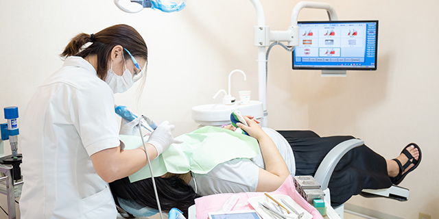
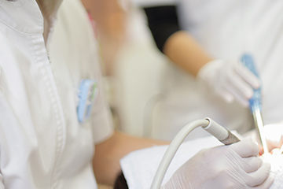
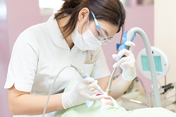
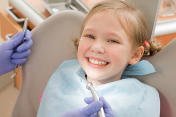

079-562-8471
079-562-8471- Home
- 歯周病・マタニティ・小児歯科
歯周病は国民病ですPerio
歯周病ときくと、高齢者がかかる病気のイメージがあるかもしれません。しかし実際には、20代や30代の方にも症状が見られ、日本の成人の約8割が歯周病予備軍またはすでに発症しているといわれるほど蔓延している歯ぐきのトラブルです。お口の中だけでなく全身疾患とも関連しているとされている歯周病は早めに治療しましょう。

「歯ぐきの腫れ」「歯ぐきからの出血」「口臭」など気になるときにはできるだけ早く、兵庫県神戸市三宮の歯医者「北野坂鳥居歯科医院」にご相談ください。こちらでは、小児歯科や妊婦さんのためのマタニティ歯科についてもご説明します。
歯周病治療
歯周病は歯ぐきの病気です。歯のまわりの組織が歯周病菌の影響で炎症を起こし、悪化すると歯を支える顎の骨が壊れて支えを失った歯が抜け落ちることにもつながる病気です。日本の成人が歯を失う原因の第1位は歯周病なのです。
〜当院での歯周病治療の特徴〜

歯周病を引き起こす原因菌には、いくつかの種類があります。繁殖する細菌のタイプに合わせた治療が求められますので、当院では治療前に歯と歯ぐきの深い溝「歯周ポケット」に含まれる細菌の検査を行います。
位相差顕微鏡（光学顕微鏡）で採取したプラーク（歯垢）を観察し、細菌を特定してから治療計画をご提案します。
歯周病と全身疾患
歯周病菌は、歯ぐきを破壊するだけではありません。血管に入り込むと全身を巡ってさまざまな部位で病気の引き金になるリスクがあります。糖尿病を悪化させたり、心臓の弁に付着して心疾患を起こしたり、脳に入り込みアルツハイマー型認知症の悪化につながるともいわれているのです。また妊婦さんが歯周病を悪化させると、早産や低体重児出産のリスクが大幅に増加します。免疫力が低下した方の誤嚥性肺炎も注意が必要です。
マタニティ歯科
マタニティ歯科とは、妊婦さんとお腹の赤ちゃんの健康のための歯科診療です。妊娠すると身体のホルモンバランスが変化し、心身が変化します。つわりがあったり、食べ物の好みが変わったり、さまざまな理由で口腔ケアをすることがなかなか難しくなることも加わって、妊婦さんのお口の中は虫歯や歯周病にかかりやすくなります。
妊婦さんのお口の健康がおびやかされると、栄養摂取のバランスが悪くなるだけでなく、これから生まれてくる赤ちゃんのお口の健康にも悪影響を与えてしまうのです。そうならないように妊婦さんのお口の健康をサポートするのがマタニティ歯科です。
妊娠中のお口の中の変化
- 歯ぐきからの出血
- 歯ぐきの腫れ
- 歯の痛み
- 虫歯や歯周病
- 口内炎、口角びらん など
妊娠安定期に歯科検診を受けましょう

妊娠初期は、まだ妊婦さんの身体が安定していないので歯科医院への通院はおすすめできませんが、妊娠中期（妊娠安定期）にはほとんどの歯科治療ができますので、歯科検診を受けましょう。とくに歯の痛みや歯ぐきの違和感がなくても、検診でお口の中のクリーニングを受けて、お口のトラブルを予防することが大切です。
小児歯科
子どもの歯、乳歯は抵抗力が低いので虫歯になりやすいうえ、いったん汚染されると進行が早いのが特徴です。そのため、小児歯科では予防中心に子どものお口の健康をサポートします。虫歯にかかって痛い思いをするよりも、あらかじめ予防処置をすれば痛みもありませんので、お子さんもリラックスして歯科診療を受けられます。
〜当院での小児歯科の特徴〜

とくに力を入れているのが毎日のブラッシングのための指導です。お子さんの成長やお口の状態に合わせてブラッシングの仕方を指導します。また、親御さんの仕上げみがきも欠かせません。コツをアドバイスしますので、就寝前のひとときをブラッシングタイムにして、親子の楽しいスキンシップの時間にしてください。
虫歯への抵抗力を高めるフッ素塗布や、あらかじめ奥歯の噛み合う面にある溝をレジン（歯科用プラスチック）で埋めて虫歯を予防するシーラントもご提供します。ほかにも永久歯に生え替わる前の過剰歯の抜歯や、生え替わったときの床矯正などにも対応します。
 WEB予約
WEB予約